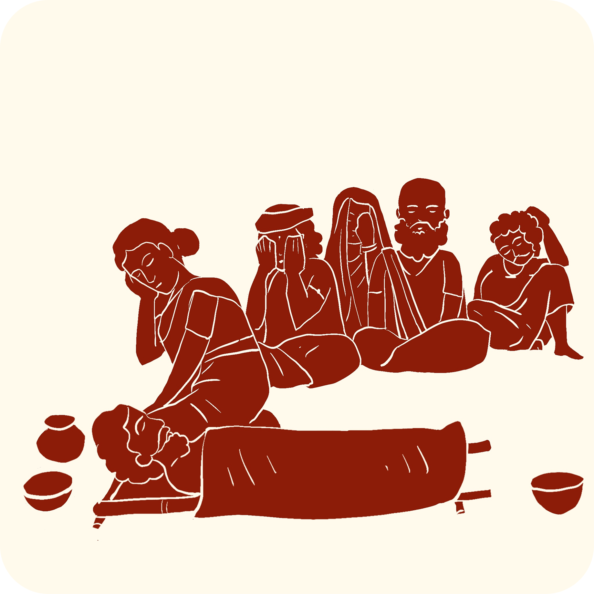

 Tap here to listen to a story about this object.
Tap here to listen to a story about this object.
Tap here to listen to a story about this object.The Sacred Circle of Life
When a person died, their body would be given a final ritual bath before the funeral ceremonies. Just like the newborn baby was bathed with water poured from a coconut shell, the same three-eyed coconut shell was used to pour water over the deceased person. It showed that the person was being cared for with the same gentleness as when they were born.
During funeral rituals, coconuts would be broken as part of the ceremony. The breaking of the coconut had spiritual meaning:
- It represented the breaking of the person's connection to earthly life
- It was an offering to help the soul move on peacefully
- It honored the person who had passed away
During the final rituals:
- Turmeric and Shikakai would be applied to different parts of the body
- A broken coconut would be placed near the person
- Lamps would be lit
- The coconut shell would be used to pour water for the final bath